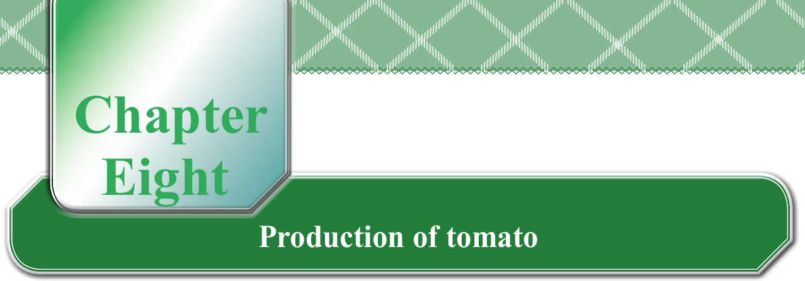
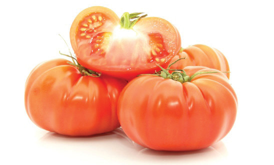
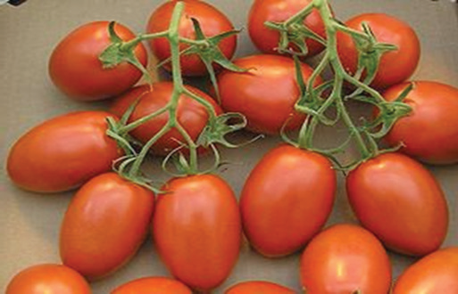
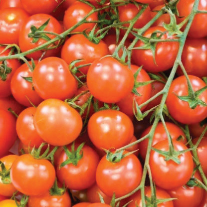

Chapter Eight
Production of tomato
Getting started with tomato production
Tomato is a fruit vegetable that can grow all year round. Tomato production can generate more profit when grown in its off-season. Tomato is full of vitamins A, B, and C. It also has minerals such as iron and phosphorus. Moreover, it has a special ingredient called lycopene. This helps to protect our bodies from certain diseases, for example, heart diseases and cancers. Tomatoes appear in different characteristics such as size and shape as shown in Figures 8.1 (a) to (d).



